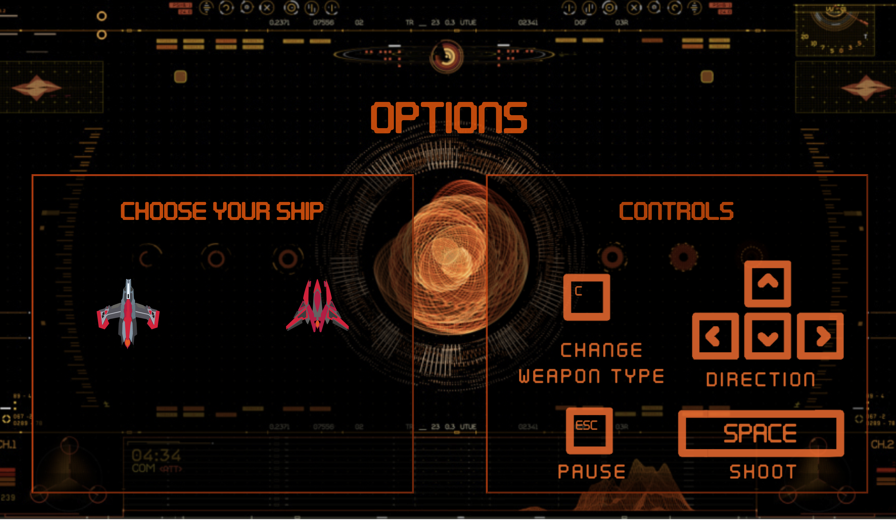
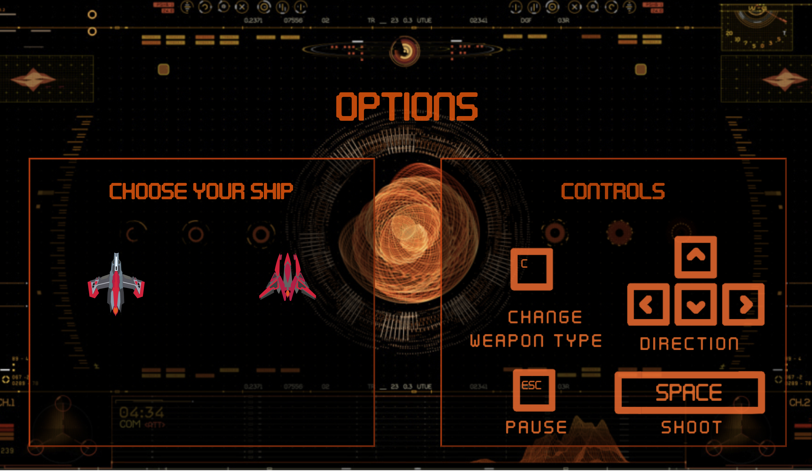

Informations
- Type: Projet academique
- Device: Desktop
- URL de l'application: Ouvrir l'application
- GitHub: Ouvrir le dépôt GitHub
Space Invaders Elements
Remake du jeu Space Invader avec une nouvelle option de répartition des dommages causés par les tirs. Avec la touche "C" on change d'élément de tir pour causer plus de dégats en fonction des aliènes qui nous attaquent.
Par exemple un tir de feu ne fait aucun dégât à un aliène de feu.
On peut prendre des bonus : récupérer une partie de la jauge de vie et des malus : les touches directionnelles sont inversées.
TECHNOS : HTML/CSS, Angular 8